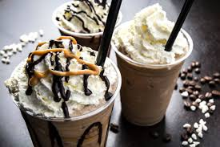
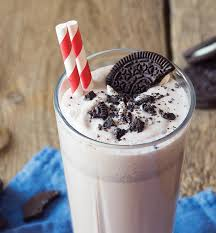
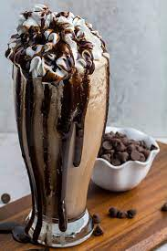

MILK SHAKES

Ingredients
- Ice-cream
- milk
- added flavours
Calorie Chart
| Nutrients |
Quantity |
| Carbs |
31 |
| Dietary Fiber |
0 |
| Sugar |
28 |
| Fat |
12 |
| Saturated |
8 |
| Polyunsaturated |
0 |
| Protein |
7 |
| Sodium |
0 |
| Potassium |
0 |
| Cholesterol |
0 |
| Vitamin A |
0 % |
| Vitamin C |
0 % |
| Calcium |
0 % |
| Iron |
0% |



FUN FACTS
- The first known printed reference to a “milkshake” dates back to 1885 and contains whiskey as one ingredient. For medicinal purposes only (wink wink)
- Milkshakes got their name from being served in bars. If the customer enjoyed the milkshake, he shook hands with the bartender. If not, the bartender didn’t get a tip.
- June 20th is National Vanilla Milkshake Day.